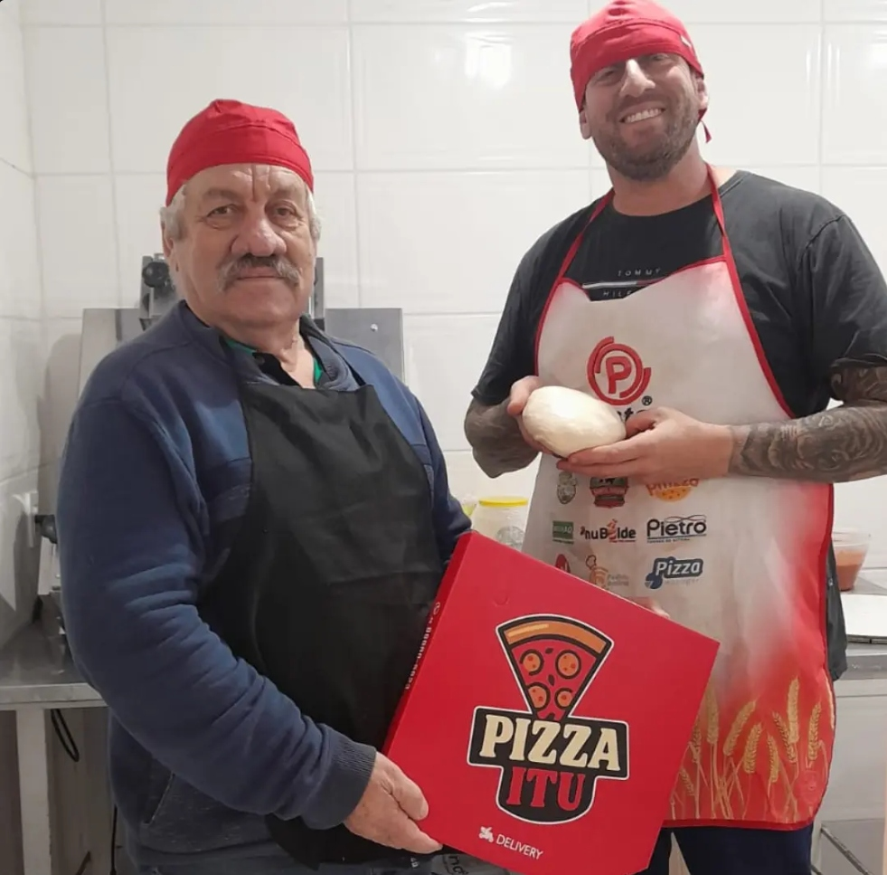

TRADIÇÃO & DISCIPLINA
Um Casal, Duas Paixões
Ela comanda o café especial, croissants e doces finos de terça a domingo. Ele — mestre faixa-preta de Jiu-Jitsu — prepara pessoalmente a massa artesanal que descansa rigorosas 48 horas em maturação biológica a frio.